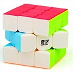
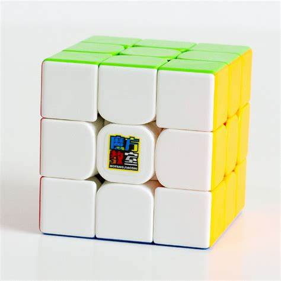
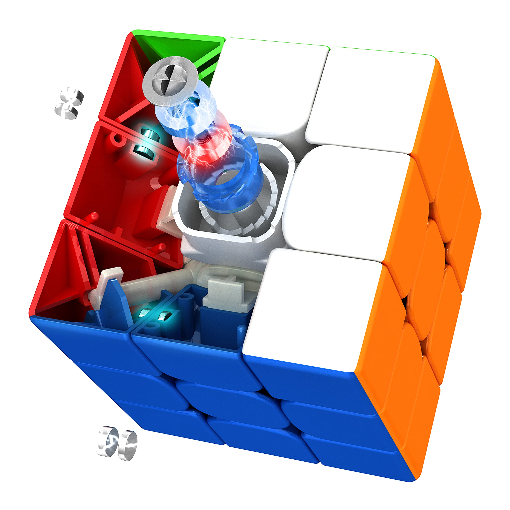
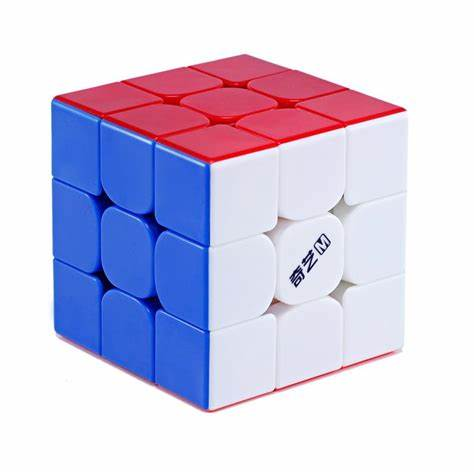
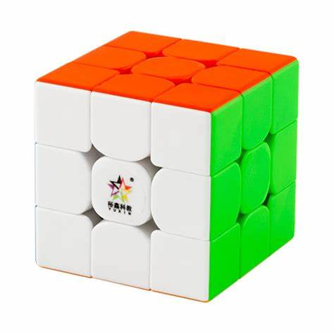
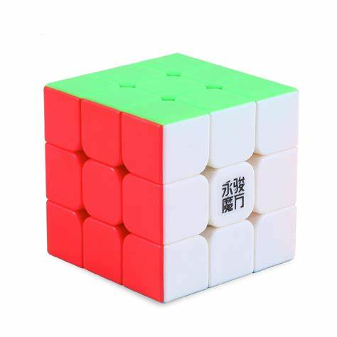
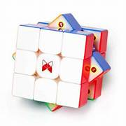
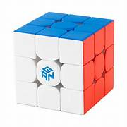
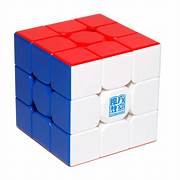
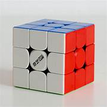

Marcas y Modelos
Existen muchas marcas de cubos y modelos, aunque las tres principales son: Moyu, Quiyi y GAN. En Argentina no es tan fácil de conseguir cubos, porque no hay mucha variedad, pero los mas populares suelen estar en Mercado Libre o en tiendas de cubos. Yo elegí e hice una lista de los mejores cubos según nivel, cada uno con sus pros y contras. Ustedes sabrán cual elegir, según sus circunstancias.
Quiyi warrior w
El quiyi warrior w es el cubo básico, con el que todo aquel que quiere aprender a armar el cubo rubik debería empezar. Tiene un buen giro, y es más barato que otros cubos que son peores. por lo que si recién aprendiern o quieren aprender a armar el cubo rubik, les recomiendo este cubo
Cubos gama media
Si ya bajaste mucho tus tiempos y sientes que el quiyi warrior w se te queda lento, hay varios modelos de gama media con los que se pueden llegar a hacer resoluciones muy rápidas:
-
Moyu RS3M 2020
Este cubo es de lo mejor en cuanto a calidad-precio, y el que más recomiendo de esta lista. Tiene buen giro y corte de esquinas, y es magnético. Con este cubo se pueden llegar a hacer resoluciones de menos de 10 segundos, y se puede conseguir por Mercado Libre a un precio aproximadamente de $6000.
-
Moyu RS3M 2021
Es prácticamente igual cubo que el anterior, pero un poco mejor en todo, y en vez de un tornillo tiene el sistema Maglev (dos imanes opuestos). Se puede conseguir en Mercado Libre por un precio aproximado de $13.000.
-
Qiyi MS
Este es otro cubo muy bueno en cuanto a calidad-precio. No tiene mucho corte de esquinas pero el giro es muy fluido, y es magnético. Se puede conseguir en argentina a un precio de aproximadamente $7000.
-
Yuxin Little V2
Este es otro cubo magnético, pero con un giro más pesado y un corte de esquinas no tan bueno. Igualmente es un gran cubo con el que se pueden hacer resoluciones muy rápidas, y se puede conseguir por Mercado Libre a un preciio aproximado de $5000.
-
YJ Yulong V2 M
Este es un clásico, y el segundo que más recomiendo de la lista. Tiene un buen corte de esquinas y un buen giro, y también es magnético. Con este cubo se pueden hacer resoluciones de menos de 10 segundos, y se puede conseguir en Mercado Libre por un precio aproximado de $7000.
Cubos Gama alta
Estos son los mejores cubos del mercado, y los mas caros al mismo tiempo. Si todavía no bajas de los 20 segundos, no recomiendo comprar uno de estos, porque no te va a hacer mucha diferencia con un cubo de gama media, y sale el doble de caro. Para los que ya bajaron de los 15 o 10 segundos, sí recomiendo comprar alguno de estos cubos.
-
Tornado V3
 -
GAN 13 Maglev
 -
Super RS3M
 -
Quiyi MP ball core

Todos estos son cubos muy buenos, uno con mejor giro, otro con mejor corte de esquinas, etc. Pero lo importante es ver cuál se adapta mejor a ustedes. Cualquiera de estos cubos les va a ayudar a mejorar, pero quizá hay uno que les va mejor que otro, así que les recomiendo ver un video que compare a los cubos y ver cual les gusta más.